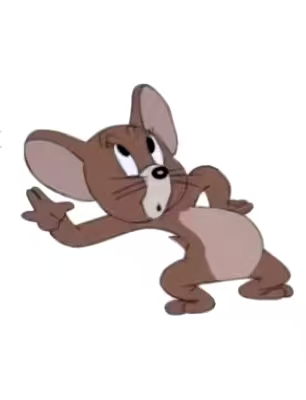
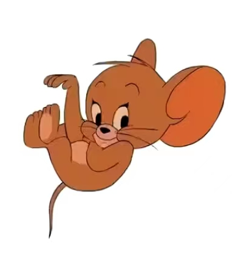

- 1940（看看图片） 
- 1950（看看图片）

- 1963（看看图片） 
杰瑞线条相对明朗，但颜色是棕灰色，整体色调偏暗。
此时角色拟人化程度不高，画面为适配影院热场短片的需求，
细节刻画较扎实，氛围偏写实。
杰瑞颜色变化不大但色调加深，体型略有变胖，身材比例也更匀称。
整体线条比1941版更明朗流畅，拟人化程度大幅提升，
背景细节丰富，贴合日常家居场景，是很多人心中的经典画风。
杰瑞变成了大眼睛造型，还多了头顶两撮毛的设定。
角色线条偏硬朗尖锐，神态常显阴郁诡谲，不再是此前的憨萌感。